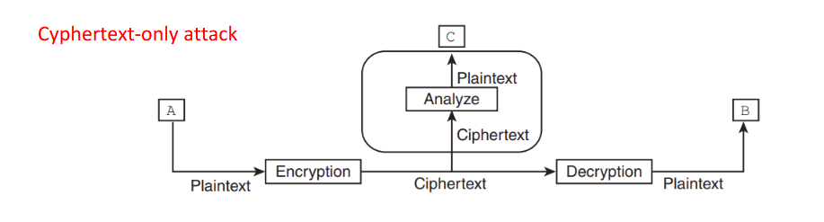
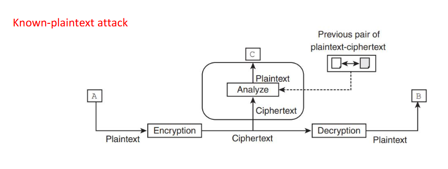
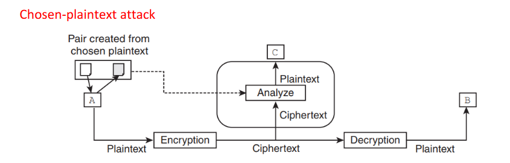
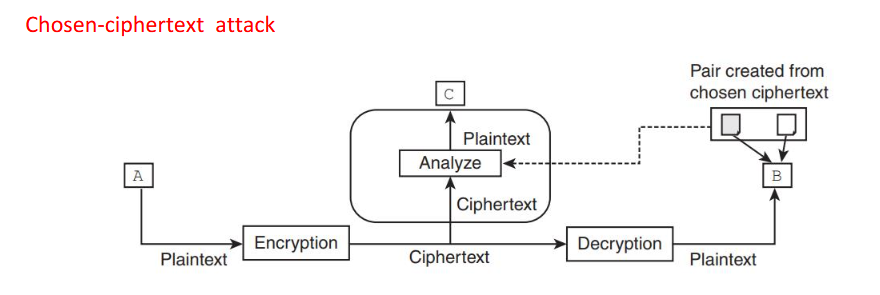

Cryptography (from kryptos: secret writing) is the process of altering messages to hide their meaning from adversaries. It is essential for communicating over untrusted mediums like the Internet.
| Symmetric Key Cryptography | Public Key (Asymmetric) Cryptography |
|---|---|
| Uses a single key for both encryption and decryption. | Uses two different keys (Public for encryption, Private for decryption). |
| Key distribution is a big problem. Requires \( \frac{n(n-1)}{2} \) keys for n users. | Key distribution is not a problem. |
| Very fast processing. Ciphertext size usually ≤ original text. | Slower processing. Ciphertext size usually > original text. |
| Used only for confidentiality. | Used for confidentiality, integrity, and non-repudiation (Digital Signatures). |
| Algorithms: DES, AES. | Algorithm: RSA. |
Cryptanalysis is the art of breaking encrypted codes to obtain the plaintext or key. There are four primary models based on the attacker's access:

The attacker analyze the intercepted ciphertext alone to find the plaintext or key.

Attacker uses knowledge of previous plaintext-ciphertext pairs to help break the current message.

Attacker chooses specific plaintexts to be encrypted and analyzes the resulting ciphertexts.

Attacker chooses specific ciphertexts to be decrypted and analyzes the resulting plaintexts.
Broadly divided into Substitution (changing character identity) and Transposition (changing character position).
Additive / Shift / Caesar Cipher: Shifts every letter by a fixed key \(K\).
Multiplicative Cipher: Multiplies value by key \(K\). Requires \(gcd(K, 26) = 1\).
Affine Cipher: A combination of both. Uses key pair \((K_1, K_2)\).
Before encrypting digraphs (pairs), process the plaintext:
Keyless (Staff Cipher): Enter data horizontally in a table, read it vertically. Width of the table determines secrecy.
Keyed: Divide plaintext into blocks and use a key to reorder (permute) the characters in each block individually.